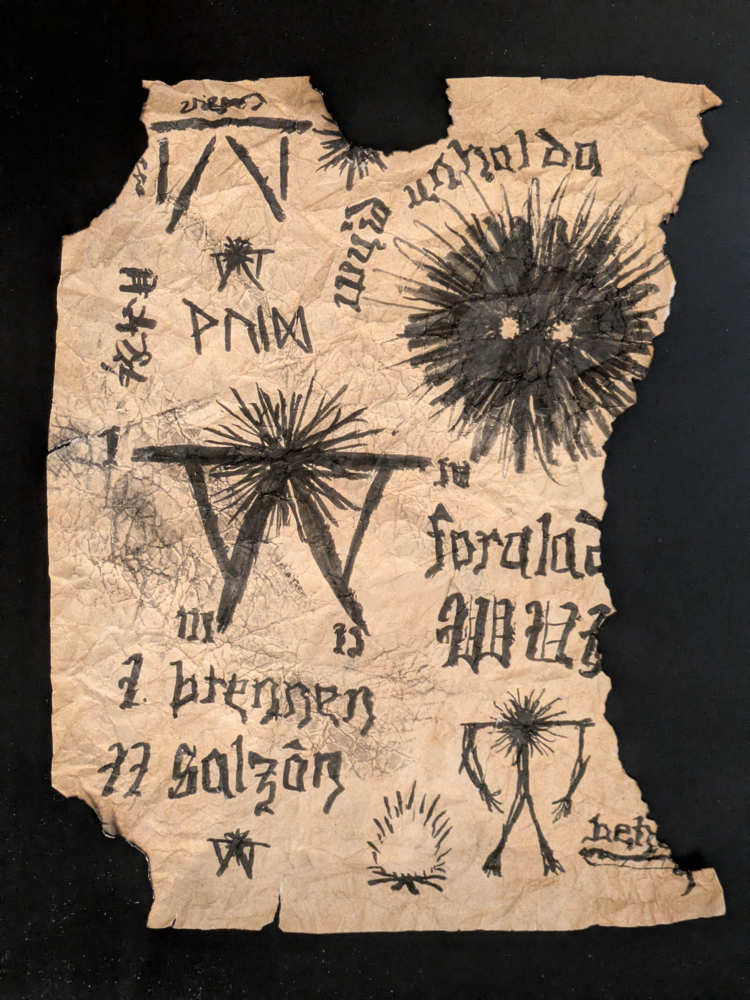

Wuid History
Hiding within the idyllic Wasatch–Cache National Forest east of Salt Lake City lurks America’s most elusive and mysterious cryptid… The Wuid. Not much is known about the Wuid (“wid”) itself, but many stories have been whispered throughout the years.
The Wuid is an arborescent, humanoid being thought to be responsible for the disappearance of several miners, stonecutters, and hikers between 1853 and 1999 across the Wasatch-Cache National Forest. According to legend, pagans with ancestry from Germany and Scotland disguised themselves as Mormon pioneers to cross the plains, also seeking freedom to practice their “religion”. But more than that, it’s said that they unleashed something ancient in the mountains that still haunts the area. The Mormon pioneers discovered the pagan interlopers after arriving in Salt Lake City in 1847, and ran them out of the settlement into the woods of Emigration Canyon, where the Donner party had passed through just a year prior. Shortly after the pagans were banished to the woods, the disappearances began.
While the fate of the banished pagans remains a mystery, several artifacts have been discovered, including the following document, discovered by local surveyors in Little Cottonwood Canyon. The photo was taken in 1934, but the document has since been destroyed, likely due to fears of demonic ties. Some of the wording appears to be in High German, while other text has not been identified. The Wuid itself is named after the text that appears in this document (“wuid” being Bavarian for “wild”), as well as our best guess at its appearance(s).
